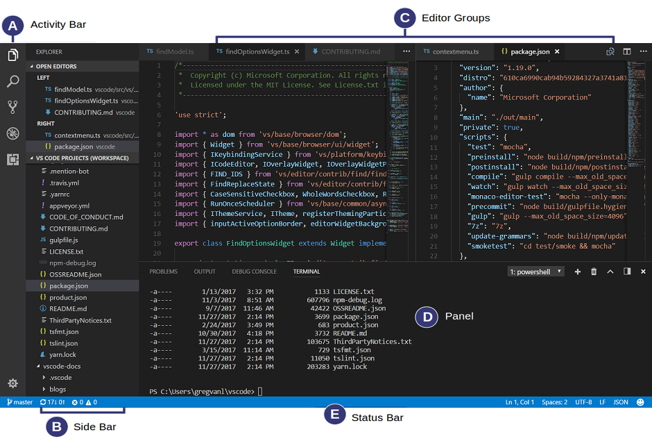

Machine Learning Tools
(Set up the environment)
Created for
Created by
2019,

Why Python?
Why Python?
The Alternatives
- MATLAB - good for matrix manipulations, plotting of functions and data, implementation of algorithms, numerical and symbolic computing.
- cons: Proprietary Software, Domain Specific
- GNU Octave - a scientific Programming Language. Could be regraded as the free equivalent of MATLAB
- cons: Domain Specific
- R Programming Language - a free software environment for statistical computing and graphics
- cons: Complex nature and wide learning curve
- Java - Matured, multipurpose language. Lots of machine learning algorithms are written in Java
Python's pros
- Clean syntax - easy to write and read
- Matured Multipurpose Programming Language
- Vibrant community - scientists, programmers
- Myriad of ML packages and tools
Anaconda Overview
Anaconda Overview
What is Anaconda
- Anaconda Distribution is a free, easy-to-install package manager, environment manager, and Python distribution with a collection of 1,500+ open source packages with free community support.
- Anaconda package lists
- Anaconda Individual Edition Docs
Verify installation
Anaconda - path to Python interpreter
- You must know how to find the path to Anaconda's Python interpreter
- Reference: Finding your Anaconda Python interpreter path
VSCode
VSCode
VSCode and Anaconda - Overview
- If you’ve installed Anaconda as your default Python installation and installed Python for Visual Studio Code, your VSC installation is already set to use Anaconda’s Python interpreter.
- When you launch VS Code from Navigator, VS Code is configured to use the Python interpreter in the currently selected environment.
User Interface
{kind=link}
- reference: User Interface
The Command Palette
- Gives you fast access to all of the functionality of VS Code, including keyboard shortcuts for the most common operations.
- It uses fuzzy search - just type some of the starting symbols of the words for the command you are looking for
- How to activate the Command Palette:
- Press: Ctrl+Shift+P
Install Extensions
- Bring up the Extensions view by clicking on the Extensions icon in the Activity Bar
- or press Ctrl+Shift+P and type "ext show"
- Reference: Using extensions in Visual Studio Code
Extensions, needed for the course
Color Themes
- Reference: Color Themes
Keyboard Shortcuts
Course Folder Structure
Course Folder Structure
Folder structure
- Create a root folder for the course: "
MLwithPython" - Create next folder structure into your course root folder:
MLwithPython/
├── notebooks
└── python_basics
Git && GitHub
Git && GitHub
What is a VCS and how it makes life easier?
- VCSVersionControlSystem
- a system that records changes to a file (or directory) over time so that you can recall specific versions later
- You can version control all kind of work you do:
- Poetry, Images, Music, ...
- Programming
- DataScience/ML Projects and the DataSets
- Easily share your work with other team members
- There are different types and implementations of VCS.
- In this course we'll use git && GitHub
Installing and configuring git
- Installing Git
- Note for Windows Users - install from gitforwindows.org which also brings a nice features like
git bash,shell integrationand more
GitHub
- github.com is Web hosting service for projects using git
- Alternatives:
- GitLab
- BitBucket
- Create a free account on GitHub Join GitHub
VC Your Project and share it on GitHub
Adding an existing project to GitHub using the command lineLive Demo
- Create Local Git Repository
# make sure you are in your main project folder
pwd
# you should see '.../MLwithPython'
# initialize empty git repository
git init
# create a file and write something in it
# add all changes to be tracked by git:
git add -A
# commit all changes with appropriate message:
git commit -am'initial commit'
- Create new github repository and follow the instruction there.
These slides are based on
customised version of
framework